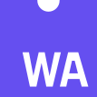
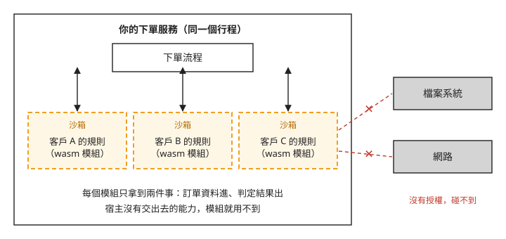
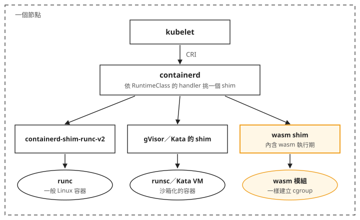
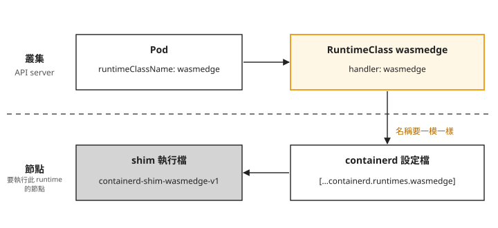

Day 0: wasm 是什麼——編譯目標、能力沙箱與在 Kubernetes 的執行路徑¶

假設你在做一套電商 SaaS，一個大客戶提出要求：「訂單成立前，要先跑我們自己的風控規則。規則是商業機密，不方便交給你們實作。」換句話說，你要在自己的下單流程裡，執行一段不是你們寫的程式。
前一章比較程式執行中的偵測與攔截，這一章改看執行外部程式時，如何限制它能使用的權限。從這個需求出發，先介紹 WebAssembly（簡稱 wasm）是什麼、為什麼它適合執行別人寫的程式，再看 Kubernetes 怎麼把一顆 pod 交給 wasm 執行。這一章不碰叢集，Day 1 才會在真的節點上把這條路建出來。讀完之後，遇到「要在自己的平台上執行別人寫的程式」這類需求，你能判斷 wasm 該不該列入候選，也知道要讓 Kubernetes 用 wasm 執行一顆 pod，叢集裡和節點上各要宣告什麼。
兩個直覺做法各卡在哪裡¶
第一個直覺是請客戶自己架一個服務，你在下單流程裡呼叫它。這樣做得到，但規則是在客戶那邊跑的：每張訂單多一次跨網路的往返，客戶也得自己部署服務、維持它不中斷。接的客戶一多，你下單流程的延遲和故障率，就取決於一排你管不到的服務。
第二個直覺是把客戶的程式碼收進來，包成容器自己跑。這省掉了網路往返，但帶來兩個問題。第一，要替不受信任的程式設計檔案、網路與資源限制。第二，如果沿用每個客戶一個常駐服務的設計，幾百個客戶就需要管理幾百個服務，實際規則卻可能只執行幾秒鐘。容器可以限制權限，也可以按需啟動，但你仍要設計這套管理方式。
另一種做法是把規則載入自己的服務，由服務只提供必要的呼叫介面。wasm 適合拿來評估這種外掛需求：客戶的程式在你控制的執行環境裡運作，存取外部資源時必須經過你提供的介面。
wasm 是什麼¶
一種編譯出來的格式¶
wasm 一開始是為瀏覽器設計的。網頁想跑運算量大的程式，JavaScript 不夠快。早期的嘗試叫 asm.js：把 JavaScript 限縮成一個嚴格的子集，讓瀏覽器的引擎可以像處理編譯語言那樣最佳化它。這個做法能用，但它終究是文字格式的 JavaScript。WebAssembly 把同一個想法做成正式的二進位格式。
實際開發通常用 Rust、Go、C 等語言，再編譯成 wasm 格式的檔案，這個檔案叫 wasm 模組。它也是一種編譯目標：編譯器產生的不是只適用某一款 CPU 的執行檔，而是交給 wasm 執行環境處理的指令。所以回到開場的需求，要問的是客戶的規則能不能編譯成 wasm，而不是客戶要不要學一種新語言。
wasm 的標準在 W3C 的社群群組與工作群組裡制定，參與者包含各主要瀏覽器的代表，不屬於單一廠商。
預設什麼都不能做¶
瀏覽器不能讓一個網頁隨意讀寫你電腦上的檔案。所以 wasm 從一開始就跑在記憶體安全的沙箱裡，而且預設沒有任何能力：不能開檔、不能連網路，連環境變數都讀不到。載入並執行 wasm 模組的那個程式叫宿主（host），模組要做什麼，都得由宿主明確交給它。在瀏覽器裡，宿主是瀏覽器；在開場的例子裡，宿主就是你的下單服務。
下面這張圖畫的是開場那個需求改用 wasm 之後的樣子：三個客戶的規則載入同一個服務行程，各自在一個沙箱裡。

我們可以從圖上看到兩件事：
- 每個模組只拿到下單流程交給它的兩件事：訂單資料進、判定結果出。模組要開檔或連網路，宿主沒有授權就做不到。
- 三個客戶的模組在同一個行程裡，不需要每個客戶各開一顆 pod。呼叫模組跟呼叫自己程式裡的函式一樣，不用經過網路。
這種設計讓宿主按介面限制規則能存取的資料。不過沙箱本身不替你決定 CPU、記憶體與執行時間上限；客戶規則如果一直不結束，宿主仍需要限制與中斷機制。
WASI：讓不同宿主提供一致的系統介面¶
沙箱和授權的規則屬於 wasm 本身，不管宿主是誰都一樣。純運算的 wasm 模組可以由伺服器上的宿主直接執行。若還需要檔案或網路等外部能力，可以使用一組標準的系統介面，讓不同宿主以一致的方式提供它們，這組介面叫 WASI（WebAssembly System Interface）。官方的描述是：
WASI 應用執行在一個能力式的沙箱裡：一個 wasm 模組或元件啟動時不具備任何環境權限，只能做宿主明確授予的事。
所以 WASI 定義的是宿主可以交出哪些能力、怎麼交出去。官方的目標是讓同一套介面從瀏覽器、雲端到嵌入式裝置都能用。
作業系統並沒有因此變成宿主。載入模組的仍是下單服務或 wasm 執行期；由它實作 WASI 介面，再按授權使用作業系統的功能。
這個 sprint 不展開編譯器與記憶體實作。平台這一側需要知道的是：它是一種編譯出來的格式，預設沒有任何能力，能做什麼由宿主決定。
Kubernetes 怎麼執行 wasm¶
開場的例子是把 wasm 模組載進自己的服務。這個 sprint 主要看另一種用法：把 wasm 模組當成工作負載交給 Kubernetes，跟一般的 pod 一樣部署、排程。
一顆 pod 實際是誰啟動的¶
多數人對 Kubernetes 工作負載的印象是這樣：
這裡的 OCI 是容器映像等格式使用的標準；Linux 命名空間把行程看到的系統資源分開，cgroup 則用來限制與統計資源。這些是一般容器常用的機制。但 Kubernetes 並沒有規定 pod 一定要是 Linux 容器。啟動一顆 pod 時，各個程式的分工如下：
- kubelet 是每個節點上負責啟動 pod 的程式。它不自己建立容器，而是透過 CRI（Container Runtime Interface，kubelet 跟容器執行期之間的標準介面）請 containerd 去做。
- containerd 是節點上管理容器的程式。它也不直接把工作負載跑起來，而是啟動一支叫 shim 的程式，由 shim 負責執行。
- 一般的 Linux 容器，shim 是
containerd-shim-runc-v2，它再呼叫 runc 建立命名空間與 cgroup。wasm 的 shim 不呼叫 runc，整個 wasm 執行期就包在 shim 裡面，直接執行 wasm 模組。wasm 這條路一樣會替 pod 建立 cgroup，資源限制的做法跟一般容器相同。
本課使用 kubelet 與 containerd 既有的介面，再加入相容的 shim 與對應設定。能否使用仍取決於版本與工作負載格式。
RuntimeClass：讓 pod 指定要用哪個 shim¶
containerd 如何選擇 shim？Kubernetes 用一種叫 RuntimeClass 的資源來指定。這個 API 在 v1.20 就已經是 stable，現在的叢集都有。一個 RuntimeClass 長這樣：
apiVersion: node.k8s.io/v1
kind: RuntimeClass
metadata:
name: myclass
handler: myconfiguration # 對應到 CRI 那一側的設定名稱
handler 是一個名字，對應到節點上 containerd 設定檔裡的一段。
下面這張圖把一顆 pod 在節點上被啟動的完整路徑畫出來：

圖中從 kubelet 到 containerd 的路徑相同，差別在 containerd 選擇哪個 shim：一般容器經由 runc 啟動，wasm 則由 shim 裡的執行期執行。
Kubernetes 官方文件寫的 handler 設定路徑是這個：
上面這一行是 containerd 1.x 的寫法。handler 必須對應到節點實際載入的設定，不能只複製路徑；設定格式與解析結果的核對方式，見 Day 1 的「看節點上的 containerd 設定」。
把整條對應關係畫成圖，上半是叢集裡的物件，下半是節點上的設定：

圖上用的名字取自 Day 4 的 WasmEdge（一個 wasm 執行期）。我們可以看到，宣告分在兩個地方：
- 叢集裡：建一個 RuntimeClass，pod 用
runtimeClassName指定它。這只要做一次。 - 節點上：containerd 設定檔裡要有一段和
handler同名的設定，指向一支已經放到節點上的 shim 執行檔。改完設定要重啟 containerd 才會生效。每一顆要跑這類 pod 的節點都要做。
兩邊的名字對不上，pod 就起不來。Day 1 會分別看「handler 對得上」和「handler 不存在」兩種情況各長什麼樣子。
gVisor 與 Kata 用的也是 RuntimeClass¶
RuntimeClass 不是為 wasm 新加的。Kubernetes 官方文件舉的用途，是讓需要更強隔離的 pod 改用 gVisor、Kata Containers 這類執行期；例如設定了 gvisor RuntimeClass 的 pod，會以 gVisor 的 runsc 執行。
wasm 用的是同一套機制：RuntimeClass、shim 介面、節點設定檔的位置都一樣，換掉的只有 shim。要在 Kubernetes 上跑 wasm，平台這一側要學的是怎麼裝 shim、怎麼改節點設定，Kubernetes 這邊沒有新的概念。
兩條已經停止的路¶
搜尋 wasm 和 Kubernetes 的資料時，會找到兩種已經停止的做法的教學，它們的官網和文章都還在線上。下表把它們跟現行做法放在一起：
| 做法 | 是什麼 | 現況 |
|---|---|---|
| Krustlet | 用 Rust 實作、用來執行 wasm 的 kubelet，繞過 CRI，直接向 API server 註冊成節點 | 最後發版於 2021 年，2022 年仍有提交，2023 年 README 標示不再積極維護；從未發過正式版 |
| AKS 的 WASI node pool（2021–2025） | 雲廠商替你把 shim 裝好，包成受管的預覽功能 | 2025-05-05 起無法再建立，微軟改推薦 SpinKube（在 Kubernetes 上執行 wasm 的開源專案） |
| RuntimeClass + containerd shim | 節點裝 shim、叢集宣告 RuntimeClass，跟 gVisor／Kata 同一條路 | 現行做法 |
Krustlet 以 Rust 實作 kubelet 來執行 wasm，WASI node pool 依賴雲廠商的受管功能，兩者都已經停止；現行做法只用 Kubernetes 已經有的 RuntimeClass。Day 1 會實際確認前兩條今天的狀態。
這個 sprint 會操作三條路線：wasmCloud（一個自帶執行環境的 wasm 應用平台）、手動安裝 WasmEdge 的 shim、由 SpinKube 的 runtime-class-manager 替節點安裝 shim。其中 wasmCloud 不走 RuntimeClass：它在一般的容器裡跑自己的 host，再把多個 wasm 程式（wasmCloud 稱為「元件」）載進同一顆 host pod，比較接近開場那張圖的做法。WasmEdge 和 SpinKube 走的則是 RuntimeClass 加 shim。
wasm 適合什麼、不適合什麼¶
常聽到的考慮 wasm 的理由有四個：
- 冷啟動：常見的說法是 wasm 啟動比容器快。但用 containerd 執行時，wasm 一樣要經過 shim 與 cgroup 的建立，Day 5 會用同一支程式比較
ctr run --rm的耗時；這個量測還包含執行與清理，不能直接視為純啟動時間。 - 產物大小：應用可編成 wasm 模組，不必附完整 Linux 使用者空間；部署時仍可能包成 OCI 映像，Day 4 會比較不同打包方式。
- 單節點密度：同樣的記憶體能放下幾個租戶。Day 5 會量同一支程式在兩邊的記憶體用量。
- 跨架構：同一個模組在 amd64 與 arm64 上都能跑，不用分別編譯。
產物大小與跨架構，本課沒有實測。
截至 2026-08，下列情況不適合用 wasm：
- 依賴完整 POSIX 介面的工作負載。 POSIX 是一組常見的作業系統介面規範；WASI 不保證提供現有 Linux 程式依賴的全部介面。
- 要跑現成的二進位檔。 沒有原始碼，就編譯不成 wasm。
- 依賴成熟生態系的工作負載。 函式庫、除錯工具、可觀測性整合都還不完整，跟容器差距很大。
- 需要長期穩定的技術基礎。 這個生態系汰換得很快：Krustlet 與 AKS 的 WASI node pool 在五年內先後停止，現行做法裡也有一個關鍵元件出現停滯的跡象，Day 6–8 會實測。
整理起來，最典型的使用時機是：系統要執行不是你們自己寫的程式，例如開放客戶自訂規則、讓第三方開發外掛，又不能給它完整的權限。開場那個風控規則就是這種情況。遇到「這段邏輯我們自己寫，你們負責執行」這類要求時，除了另架服務和包成容器，wasm 也是一個選項。這門課介紹它能做什麼、邊界在哪裡，不建議把既有的工作負載搬過去。
帶著三個問題走完這個 sprint¶
這個 sprint 最後要替你自己的環境回答要不要用 wasm。判斷用的三個問題先列在這裡，後面每一章的實測都在替它們收集資料：
- wasm 工作負載要不要看起來跟一般的 Kubernetes 工作負載一樣？ 也就是 Deployment、Service、
kubectl那一套能不能照用。三條路線的答案不同，Day 2–8 逐條驗證。 - 你的動機是不是冷啟動或部署密度？ 「wasm 比容器快、比容器省」這個說法，Day 5 用同一支程式、同一顆節點量。
- 你選的工具明年還有人維護嗎？ 方法在下一節，每條路線最後一天各查一次。
怎麼判斷一個開源專案還有人維護¶
下面五項可以拿來查任何工具，其中第 2 項要配著第 4 項一起看：
- 治理狀態：在哪個基金會的哪個階段，有沒有封存或遷移的跡象。GitHub repo 的
archived欄位比官網可靠：官網要有人動手才會關掉，封存只要按一個按鈕。 - release 節奏，配著第 4 項讀：只看最後發版日期，會把順序排錯。只依賴穩定介面的元件，三年沒發版也不一定有問題；跟著快速變動的介面走的元件（例如 containerd 的設定結構），每個月發版也可能跟不上。
- default branch 上最後一筆不是機器人送的 commit，加上近 13 週的逐週分布：不要看 GitHub 的
pushed_at，dependabot 這類自動升級工具推到自己分支的 commit 也會更新它。也不要只看總和，要看有沒有連續好幾週是零。 - 它依賴哪些介面，那些介面變動多快：這一項決定第 2 項怎麼解讀。
- 下游採用的第一手證據：雲廠商的文件、實際的使用量，而不是專案官網自己列的採用名單。另一個少有人用的訊號：一個每次都會重現的 bug 在上游放了多久沒人處理，可以看出那條路徑實際有多少人在用，比 GitHub 的星星數更能說明問題。
連續幾週是零的判讀要保守：七、八週沒有 commit 可能只是暑假，要判定成趨勢，至少隔一季再查一次。
想一想¶
- 一家 CI 平台想讓使用者上傳自訂的建置步驟，這些步驟要用
apt-get安裝套件、呼叫現成的編譯器。wasm 適合拿來執行這些步驟嗎？為什麼？ - 同事在叢集裡建了一個
handler為spin的 RuntimeClass，pod 也指定了它，卻一直起不來。他確認過 shim 執行檔已經放在節點上。你會先請他檢查哪兩件事？ - 你在評估一個 wasm 相關的 operator：GitHub 顯示
pushed_at是上週，近一年有三百多個 commit，官網列了十家採用的公司。這些資料夠不夠判斷它還有人維護？還要查什麼？
小結¶
wasm 是一種可供不同宿主載入的編譯目標；它不會因為能執行程式，就自動取得讀檔、連線等系統權限。WASI 為這些能力提供標準介面，宿主仍要決定授予什麼，並設定資源限制。在 Kubernetes 上，RuntimeClass 選擇 handler，節點的設定再把 handler 接到對應的 shim；執行檔、設定與必要的隔離環境都要準備好。評估工具時，除了看程式是否能跑，也要看節點怎麼管理、故障如何追查，以及所依賴版本的維護狀況。
延伸閱讀¶
想再深入，可以從這幾份開始：
- WebAssembly 官方站台 —— 「可攜的編譯目標」「記憶體安全的沙箱執行環境」的出處，也說明了標準是在 W3C 的社群群組與工作群組裡制定的。
- WASI 官方站台 —— 能力式沙箱那段描述的一手來源：模組啟動時不具備任何環境權限，只能做宿主明確授予的事。
- Kubernetes RuntimeClass 文件 —— 「Kubernetes 怎麼執行 wasm」那一節的依據：v1.20 起 stable、
handler如何對應到 containerd 設定檔的 runtimes 區段，以及官方對「在效能與安全之間取捨」這個用途的說明。 - gVisor 的 Kubernetes 快速上手 —— 設定了
gvisorRuntimeClass 的 pod 會以runsc執行，可以對照 wasm 用的是同一套機制。 - Component Model 指南 —— 讓不同語言編譯出來的 wasm 互相呼叫、組合的元件模型；Day 2 的 wasmCloud 用到「元件」這個詞時，可以回來查。
下一步¶
這一章講的機制都還沒碰到叢集。Day 1 把 RuntimeClass 真的建到叢集裡，並逐一確認 Krustlet、AKS 的 WASI node pool 與現行的 RuntimeClass 加 shim 這三條路今天的狀態，包括對已經停止的受管功能下指令，看它回什麼。
Day 1 之後的順序，依照對節點的改動程度由低到高排：先做完全不用改節點的 wasmCloud，最後才動 containerd 設定。這樣前面的量測不會受到後面改動的影響，最後一天也才有一個乾淨的基準，可以檢查拆掉之後節點有沒有恢復原狀。
WebAssembly 標誌為 WebAssembly 專案之官方資產（CC0 1.0），此處作社群教學用途。